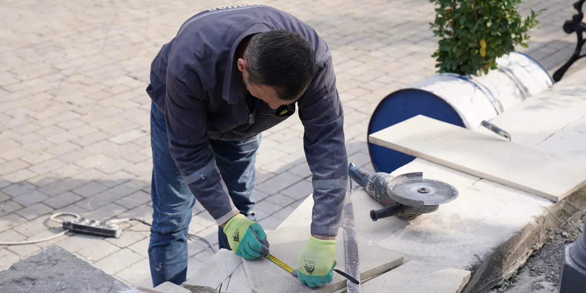
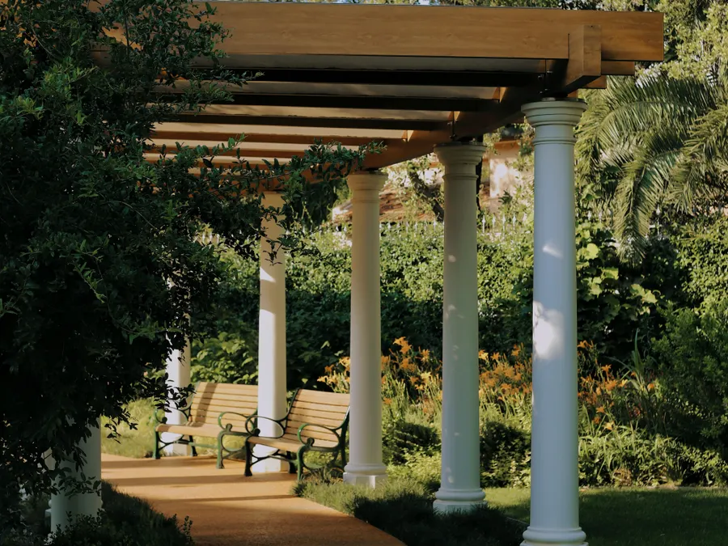

Altan och uteplats · Stockholmsområdet sedan 2004
Altan med rätt grund — inte bara rätt trall
Vi börjar under marken: schakt, dränering och plintar som klarar tjäle, sedan regelverk i tryckimpregnerat virke och först därefter trallen. Du får prisintervallet 3 800–7 200 kr/m² efter besiktning, ett fast pris skriftligt inom 24 timmar på vardagar och en tidplan på 1–3 veckor. En altan på 46 m² i Nacka landade på 260 000 kr och tog 3 veckor, inklusive räcke och trappa.
Vad en altan kostar och tar
Tre veckor från besiktning till oljad trall
En altan är ett markarbete med trall ovanpå. Därför avgör underlaget, höjden över mark och avståndet till tomtgränsen priset mer än valet av trall. Vi mäter upp på plats och skickar ett skriftligt förslag inom 24 timmar på vardagar.
Ska altanen bära en jacuzzi, en utekök eller snötyngd från ett tak behöver regelverket tätare centrumavstånd. En låg altan nära marken kräver mindre schakt än en som ligger 1,2 meter över en sluttning, där räcket dessutom är obligatoriskt. Berätta hur ytan ska användas vid besiktningen, så räknar kalkylatorn med rätt virkesdimension i stället för att vi gissar.
Vi använder plintar av betong eller en gjuten betongplatta, aldrig träpålar direkt i jord. Plintarna förses med justerbara stolpskor så att regelverket hamnar i våg och kan efterjusteras efter första vintern. Trallen skruvas med rostfria eller syrafasta skruvar, och infästningen hamnar i dolda spår om du väljer komposit.
De flesta altaner vi bygger ligger mellan 8 och 60 m². En liten uteplats på 8 m² kostar mer per kvadratmeter eftersom grund och räcke sällan blir billigare av att ytan är liten.
Markarbetet tar längst tid. Är marken fuktig eller består av lera behöver schakten stå öppen en dag extra innan plintarna gjuts.
Tryckimpregnerat trä ligger i den nedre delen av intervallet, komposit med dold infästning i den övre. Räcke och trappa räknas per löpmeter respektive styck.
Omfattning
Vad som ingår
- Markarbete: schakt, bortforsling av massor och dränerande bärlager under hela altanens yta.
- Plintar av betong eller gjuten betongplatta, dimensionerade för tjäle och för den belastning du beskriver.
- Regelverk i tryckimpregnerat virke med justerbara stolpskor och kantbalk där altanen möter marken.
- Trall i komposit eller tryckimpregnerat trä, skruvad med rostfria skruvar. Dold infästning vid komposit.
- Räcke med rätt höjd och tätare balusteravstånd där barn finns i huset, monterat i altanens bärande del.
- Trappa i samma material som trallen, med sättsteg, ledstång och räcke ned till marken.
- Belysning: lågvoltsledningar dragna under trallen, spotlights i trappsteg eller i räckesstolpar enligt din beställning.
- Oljning av trätrall i två skikt, eller rengöring och montering utan oljning vid komposit.
- Fotografering av plintar och regelverk innan trallen läggs, så att underlaget går att kontrollera i efterhand.
- Slutbesiktning med protokoll, åtgärd av anmärkningar och 5 års garanti enligt AB 04.
Det här ingår inte: markiser, pergola med tak, inglasning och utekök. Inte heller flytt av stuprör, träd som måste fällas, sprängning i berg eller asfalts- och plattläggning kring altanen.
Behövs bygglov, grannemedgivande eller en konstruktionsberäkning stannar vi vid besiktningen och lämnar ett separat skriftligt förslag på det innan något grävs. Ändringar beställs skriftligt innan de utförs, så att sluträkningen stämmer med det fasta priset.

Dag för dag
Tidsplan: besiktning dag 1, oljning vecka 3
På en altan på 40 m² är vi klara på 2–3 veckor. Kortare tid än så går inte om markarbetet ska stå öppet och betongen få torka innan regelverket monteras.
Besiktning och mätning
Vi mäter ytan, kontrollerar höjd över mark, avstånd till tomtgräns och var dagvatten kan ledas bort. Mikael Lindqvist besiktigar och sätter priset, så den som räknar på jobbet är samma person som står på tomten.
Markarbete och regelverk
Schakt, bärlager och dränering. Plintarna gjuts eller skruvas ner och regelverket läggs i våg med justerbara stolpskor. Vi fotograferar underlaget innan det byggs över.
Trall
Trallen kapas och skruvas med jämna fogar och rätt rörelsefog mot fasaden. Vid komposit monteras dolda klämmor, så att inga skruvhuvuden syns och trallen kan röra sig i värmen.
Räcke, trappa och oljning
Räcke och trappa monteras och förankras i kantbalken. Trätrallen oljas i två skikt med 24 timmar mellan, komposit rengörs. Sedan går vi igenom ytan tillsammans och skriver protokoll.
Kostnadsintervall
Kostnadsintervall per kvadratmeter
Alla siffror är kr utan moms och gäller entreprenad i Stockholmsområdet 2026. Efter besiktning lämnar vi fast pris på hela arbetet.
- Enkel standard, tryckimpregnerad trall på plintar3 800–4 600 kr/m²
- Standard, trall i ädelträ eller komposit i grundkvalitet4 600–5 800 kr/m²
- Högre standard, komposit med dold infästning och tätare regelverk5 800–7 200 kr/m²
- Tillval: räcke 1 800–3 200 kr/löpmeter, trappa 12 000–28 000 kr, belysning från 4 500 krenligt offert
| Yta och material | Prisintervall | Tidsplan | Kommentar |
|---|---|---|---|
| 12 m², tryckimpregnerat trä | 46 000–65 000 kr | 1 vecka | Låg uteplats vid entrén, räcke mot en sida. |
| 20 m², tryckimpregnerat trä | 76 000–108 000 kr | 1–2 veckor | Plintar i fyra rader, trappa med tre steg. |
| 40 m², komposit | 216 000–288 000 kr | 2–3 veckor | Dold infästning, räcke och belysning i trappan. |
| 46 m² i Nacka, komposit | 260 000 kr | 3 veckor | Genomfört 2025 med fast pris och inga tillägg. |
| 60 m², komposit | 324 000–432 000 kr | 3 veckor | Högre altan med räcke runt tre sidor. |
Tryckimpregnerat trä på 40 m² ligger på 152 000–216 000 kr, komposit på samma yta på 216 000–288 000 kr. Skillnaden är materialet och att komposit inte behöver oljas. Vill du prova din egen yta direkt finns kostnadskalkylatorn.
Arbetssätt
Så gör vi
Vi besiktigar tomten innan vi räknar. Då ser vi om marken behöver dräneras, hur högt altanen hamnar över mark och om ett räcke är obligatoriskt. Du får ett skriftligt förslag med fast pris, tidplan i veckor och en ritning på regelverkets centrumavstånd.
Under bygget har du en namngiven arbetsledare. Vi städar efter varje arbetsdag, håller massor och virke samlat på en plats vi kommer överens om, och fotograferar plintar och regelverk innan trallen läggs. Fotona följer med i dokumentationen vid slutbesiktningen.
Vi har 14 anställda, 21 år i branschen och 312 genomförda projekt i Stockholmsområdet. Jour har vi vardagar 17:00–21:00 för pågående projekt, och anmärkningar från slutbesiktningen åtgärdas utan diskussion om priset.
- Fast pris innan första spadtaget
- Namngiven arbetsledare från besiktning till slutbesiktning
- Skriftlig tidplan i veckor, utskickad i vecka 1
- Foto av plintar och regelverk innan trallen läggs
- Rostfria skruvar och dold infästning vid komposit
- Städning efter varje arbetsdag
- Ändringsarbete beställs skriftligt innan det utförs
- 5 års garanti enligt AB 04 och ansvarsförsäkring hos Trygg-Hansa
Frågor och svar
Frågor om altan och uteplats
Krävs bygglov för altan?
En altan som är högst 1,8 meter över marken, inte ligger närmare tomtgränsen än 4,5 meter och inte ändrar husets utseende brukar gå att bygga utan bygglov inom detaljplan. Är altanen högre, får tak eller glasas in krävs bygglov och bygganmälan. Kommunerna har egna regler, och i Nacka, Täby och Danderyd tittar vi särskilt på höjd och avstånd.
Vi läser detaljplanen för din fastighet vid besiktningen och säger till direkt om ansökan behövs. Behövs den skickar vi in handlingarna åt dig och räknar med handläggningstiden i tidplanen.
Trä eller komposit?
Tryckimpregnerat trä kostar 3 800–5 400 kr/m² och ska oljas varannat år. Komposit kostar 5 400–7 200 kr/m², behöver ingen oljning och rör sig mindre i väta. På en yta av 30 m² skiljer det ungefär 50 000 kr mellan materialen, och oljningen av trätrallen kostar några tusenlappar varje gång den görs.
Trä blir varmare under fötterna en solig dag men svalare sent på kvällen. Komposit har bättre grepp när det är blött och spricker inte. Vill du ha träkänslan men slippa underhållet finns trall i värmebehandlat trä, som ligger mellan de två i pris.
Vad kostar en altan på 40 m²?
Mellan 152 000 och 216 000 kr i tryckimpregnerat trä, och mellan 216 000 och 288 000 kr i komposit med dold infästning. Tidsplanen är 2–3 veckor. Räcke räknas per löpmeter, 1 800–3 200 kr, och en trappa med ledstång kostar 12 000–28 000 kr.
Ett färdigt exempel: altan 46 m² i Nacka, 260 000 kr och 3 veckor, komposit med räcke och trappa. Kunden fick fast pris innan första spadtaget och inga tillägg under bygget.
Snittbetyg 4,8 av 5 över 63 omdömen. Ett exempel från en kund i Nacka, altan 46 m² 2025: regnskyddet mot grannen löstes utan att priset ändrades, och trallen ligger still efter två vintrar.
Nästa steg
Andra tjänster
Boka kostnadsfri besiktning av tomten
Vi mäter ytan, kontrollerar marken och tittar på avståndet till tomtgränsen. Du får skriftligt förslag med fast pris inom 24 timmar på vardagar, och besiktningen tar cirka 45 minuter.
Grundat 2004 · 312 projekt i Stockholmsområdet · Fast pris efter besiktning · 5 års garanti enligt AB 04